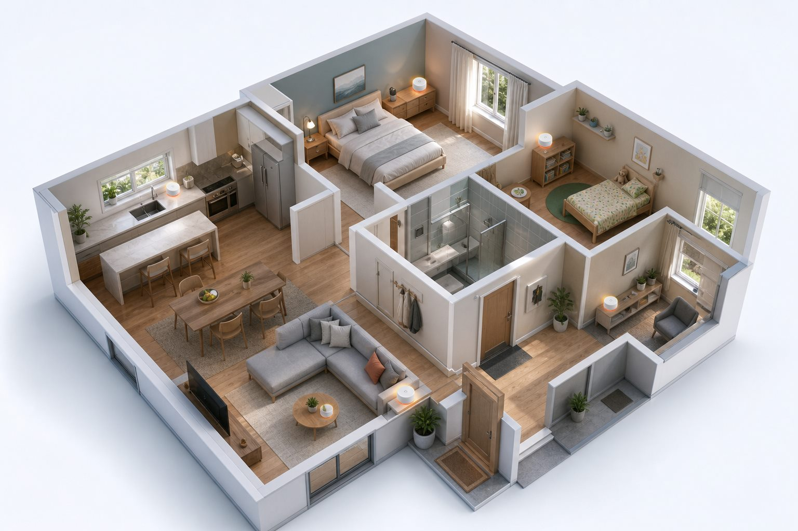
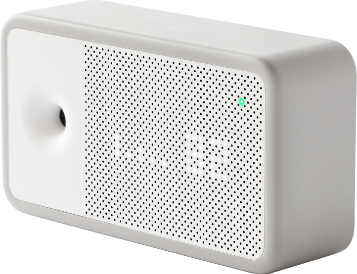

Seadistatud seadmed
Mõõteseadmed on enne saatmist märgistatud ja valmis 7-päevaseks mõõtmiseks.
Pakiautomaat -> sinu kodu -> sama pakiga tagasi
Saad seadistatud mõõteseadmed ja lihtsa juhendi. Vajutad seadme ühest nupust käima, mõõdad 7 päeva, paned kiti samasse pakki tagasi ja saadad selle samast pakiautomaadist meile. Päev pärast seda, kui pakk on meieni jõudnud, anname andmete põhjal raporti.

Mis pakis on
Komplekt on enne saatmist ette valmistatud. Sinu töö on valida ruumid, asetada seadmed juhendi järgi, vajutada start ja lasta neil kodu tavapärast elu mõõta.
Mõõteseadmed on enne saatmist märgistatud ja valmis 7-päevaseks mõõtmiseks.
Juhend ütleb, kuhu seade panna, mida vältida ja kuidas mõõteperiood alustada.
Kasutad tagastuseks sama pakki. Tagastus toimub pakiautomaadist, ilma kulleri või koduvisiidita.
Kui kit jõuab meieni, võtame andmed välja, analüüsime mustreid ja saadame raporti.
Seade kodus
Kitis on kompaktne ja puhta vormiga sisekliima monitor. See sobib riiulile, öökapile või köögitasapinnale nagu tavaline väike koduseade, mitte nagu ajutine laboritehnika.

Protsess
Vali mitu mõõteseadet vajad, sobiv pakiautomaadi asukoht ja ligikaudne kuupäev, millal soovid kiti kätte saada.
Checkout koondab hinna, tingimused ja makseviisi ühte vaatesse. E-kirjadega edasi-tagasi põrgatamist ei ole vaja.
Kit tuleb sinu valitud kodukoha pakiautomaati. Pakis on seadmed, juhend ja tagastuseks vajalik pakend.
Paned seadmed juhendi järgi ruumidesse, vajutad start ja mõõtmine jookseb 7 päeva.
Pärast 7 päeva lülitad seadmed välja, paned need samasse pakki ja tagastad 2 päeva jooksul pakiautomaati.
Päev pärast seda, kui pakk on meieni jõudnud, koostame analüüsi ja saadame raporti koos praktiliste vastustega.
Privaatsus
Teenuse mõte on teha mõõtmine mugavaks ja privaatselt kontrollitavaks. Sa saad paki, mõõdad ise ja saadad seadmed tagasi. Me ei tee koduvisiiti ning ei vaja pilte, heli ega ruumide ülevaatust.
Hind
Esimene seade sisaldab kiti ettevalmistust, 7 päeva mõõtmist, andmete analüüsi ja raportit. Lisaseadmete hind algab 50 eurost ning iga järgmine lisaseade on eelmisest 5% odavam.
1 seade + analüüs + raport + pakiautomaadi edasi-tagasi töövoog.
Esimene lisaseade 50 €, iga järgmine eelmisest 5% odavam.
Kui seade läheb kasutaja süül katki või kaob, rakendub hüvitis seadme kohta.
Checkout
Vali seadmete arv, pakiautomaat, soovitud saabumiskuupäev ja makseviis. Kuupäev on planeerimise alus ning saadetis võib liikuda ligikaudu ±2 päeva.
1 seade, 7 päeva mõõtmist, analüüs ja raport.
Raport
Kui mõõtekit jõuab tagasi, ekspordime andmed, kontrollime mõõteperioodi kvaliteeti ja koostame raporti. Raport aitab aru saada, millal probleem tekib, millises ruumis see kordub ja mida on mõistlik järgmisena proovida.
KKK
Ei. Teenus on ehitatud pakiautomaadi kaudu mõõtekiti saatmisele ja tagastusele. Paigaldad seadmed ise juhendi järgi.
Seade on enne saatmist ette valmistatud. Paned selle juhendi järgi ruumi, vajutad nupust käima, mõõdad 7 päeva ja vajutad lõpus kinni.
Päev pärast seda, kui tagastatud pakk on meieni jõudnud, teeme analüüsi ja saadame raporti.
Tellimuse tingimus on tagastada kit hiljemalt 2 päeva pärast 7-päevase mõõteperioodi lõppu. Kui tekib tõrge, võta kohe ühendust, et saaksime broneeringu ja järgmised kliendid ümber planeerida.
Ei. Seadmed mõõdavad sisekliima näitajaid nagu CO₂, temperatuur, suhteline õhuniiskus ja peenosakesed. Heli, pilti ega vestlusi ei salvestata.
Leht on ehitatud checkout-loogikaga. Pangalingi, kaardimakse ja mobiilimakse tegelik töötlemine ühendatakse makseteenuse pakkuja kaudu.